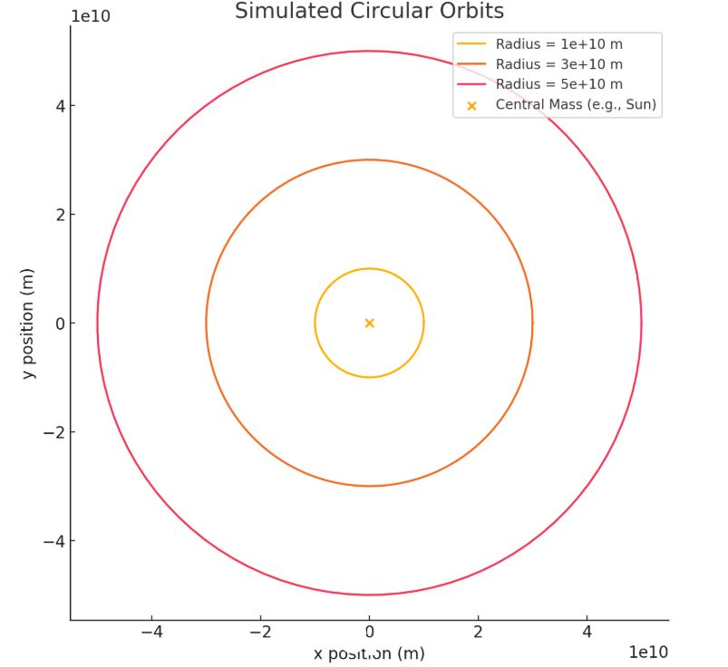
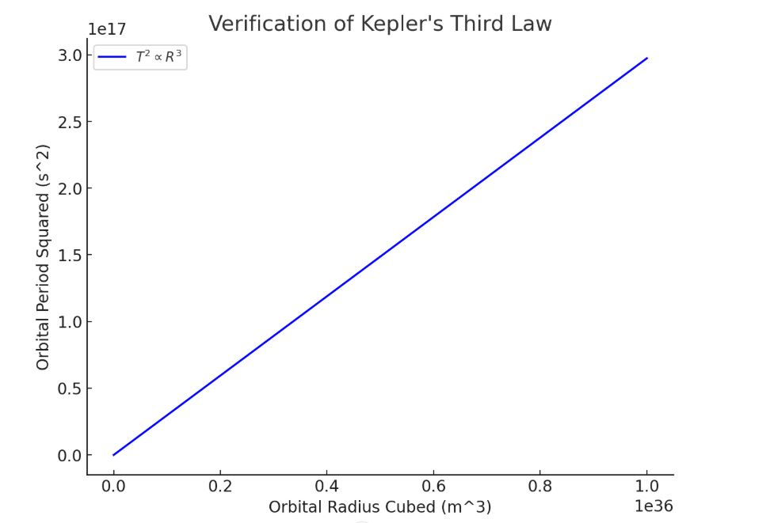
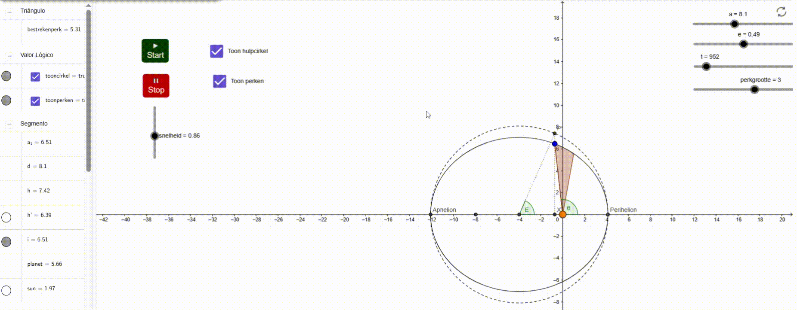

Problem 1
Orbital Period and Orbital Radius
1. Theoretical Foundation
Establishing Kepler’s Third Law
Kepler’s Third Law articulates that the square of an orbiting body's period \( P \) is directly proportional to the cube of its orbital radius \( r \):
For a circular orbit, this can be rigorously derived using Newton’s law of universal gravitation in conjunction with the concept of centripetal force:
-
Equating Gravitational Force with Centripetal Force: $$ \frac{GMm}{r^2} = m \frac{v^2}{r} $$
where: - \( G \) is the gravitational constant, - \( M \) is the mass of the central body, - \( m \) is the mass of the orbiting body, - \( r \) is the orbital radius, - \( v \) is the orbital velocity.
-
Expressing Orbital Velocity in Terms of Period: The orbital velocity \( v \) is related to the orbital period \( P \) as follows: $$ v = \frac{2 \pi r}{P} $$
-
Deriving Kepler’s Third Law: By substituting \( v \) into the force equation and solving for \( P \), we obtain: $$ P^2 = \frac{4 \pi^2}{GM} r^3 $$
This confirms that \( P^2 \propto r^3 \), where the proportionality constant is determined by \( G \) and \( M \).
Astronomical Significance
- Central Body Mass Determination: Given the period and radius of an orbiting object, the mass of the central body can be calculated.
- Orbital Radius Estimation: If the period of an orbiting body around a central body is known, its orbital radius can be estimated.
- Artificial Satellite Design: Crucial for designing stable orbits for artificial satellites around planets and other celestial bodies.
2. Practical Illustrations
-
Earth's Natural Satellite: The Moon
- The Moon completes its orbit around Earth in approximately \( P = 27.3 \) days.
- Its mean orbital radius is approximately \( 3.84 \times 10^5 \) kilometers.
- Kepler's relationship can be employed to validate Earth's mass.
-
Planetary Orbits within the Solar System
- Kepler's law facilitates comparative analysis of planetary orbits.
- For instance, Earth's orbital radius of \( 1 \) astronomical unit (AU) and period of \( 1 \) year aid in estimating the orbital radii of other planets.
3. Numerical Simulation
The following Python script models circular orbits and validates Kepler's Third Law.
import numpy as np
import matplotlib.pyplot as plt
# Universal Constants
G = 6.67430e-11 # Universal gravitational constant (m^3 kg^-1 s^-2)
M_center = 1.989e30 # Mass of the central body (kg)
# Function to calculate orbital period
def orbital_period(radius, mass=M_center):
return 2 * np.pi * np.sqrt(radius**3 / (G * mass))
# Data generation
radii = np.logspace(9, 12, 100) # Orbital radii from 10^9 to 10^12 meters
periods = orbital_period(radii)
# Verification of Kepler's Third Law
T_squared = periods**2
R_cubed = radii**3
# Plot T^2 vs R^3
plt.figure(figsize=(8, 6))
plt.plot(R_cubed, T_squared, label="$T^2 \propto R^3$", color='b')
plt.xlabel("Orbital Radius Cubed (m^3)")
plt.ylabel("Orbital Period Squared (s^2)")
plt.title("Verification of Kepler's Third Law")
plt.legend()
plt.grid()
plt.show()
# Circular orbit simulation
def circular_orbit(radius, num_points=100):
theta = np.linspace(0, 2 * np.pi, num_points)
x = radius * np.cos(theta)
y = radius * np.sin(theta)
return x, y
# Plot circular orbits for different radii
plt.figure(figsize=(8, 8))
for r in [1e10, 3e10, 5e10]:
x, y = circular_orbit(r)
plt.plot(x, y, label=f"Radius = {r:.0e} m")
plt.scatter(0, 0, color='orange', label='Central Mass (e.g., Sun)')
plt.xlabel("x position (m)")
plt.ylabel("y position (m)")
plt.title("Simulated Circular Orbits")
plt.legend()
plt.grid()
plt.axis("equal")
plt.show()
This script: - Calculates orbital periods for varied radii. - Visualizes \( P^2 \) against \( r^3 \) to validate the linear correlation.
 
4. Expansions and Constraints
- Elliptical Trajectories: Kepler’s Law remains valid, with \( r \) denoting the semi-major axis.
- Relativistic Corrections: Einstein’s theory of relativity adjusts Kepler’s laws in intense gravitational environments.
- External Disturbances: Gravitational interactions from other celestial bodies can perturb orbits over extended periods.
5. Summary
Kepler’s Third Law succinctly connects orbital period and radius, facilitating calculations in celestial mechanics. This relationship remains indispensable in astronomy, satellite design, and space exploration endeavors.
